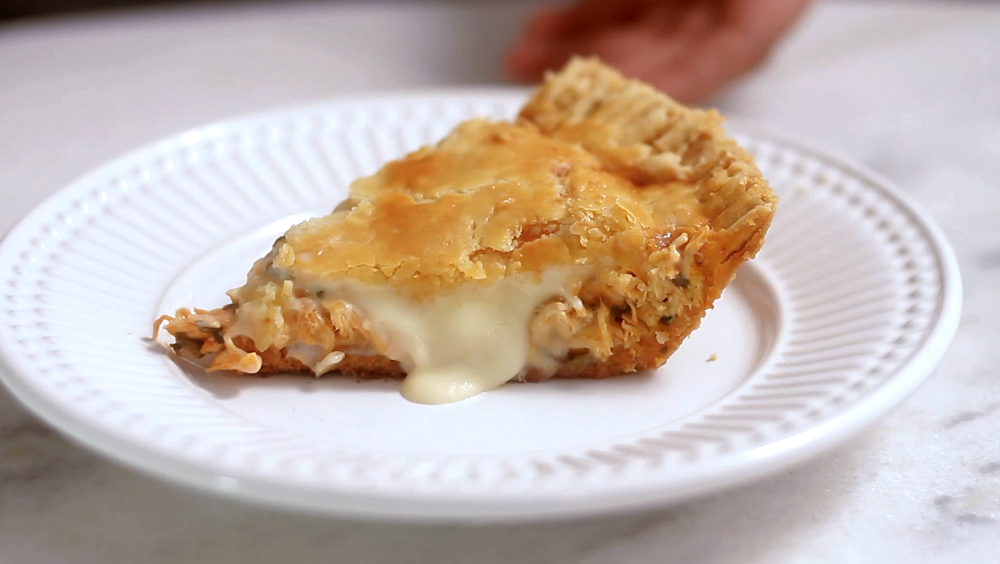
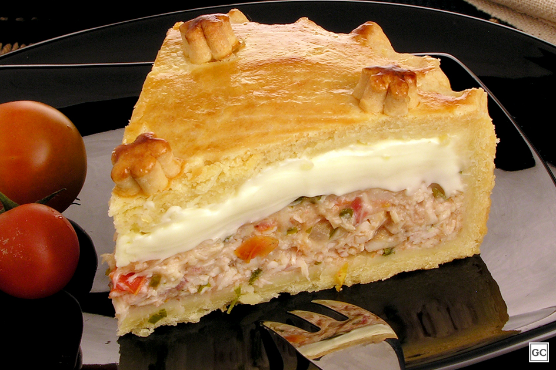
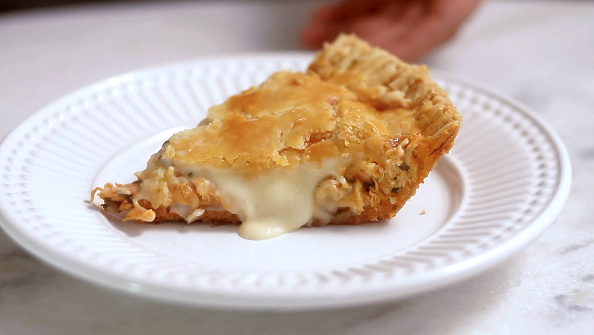
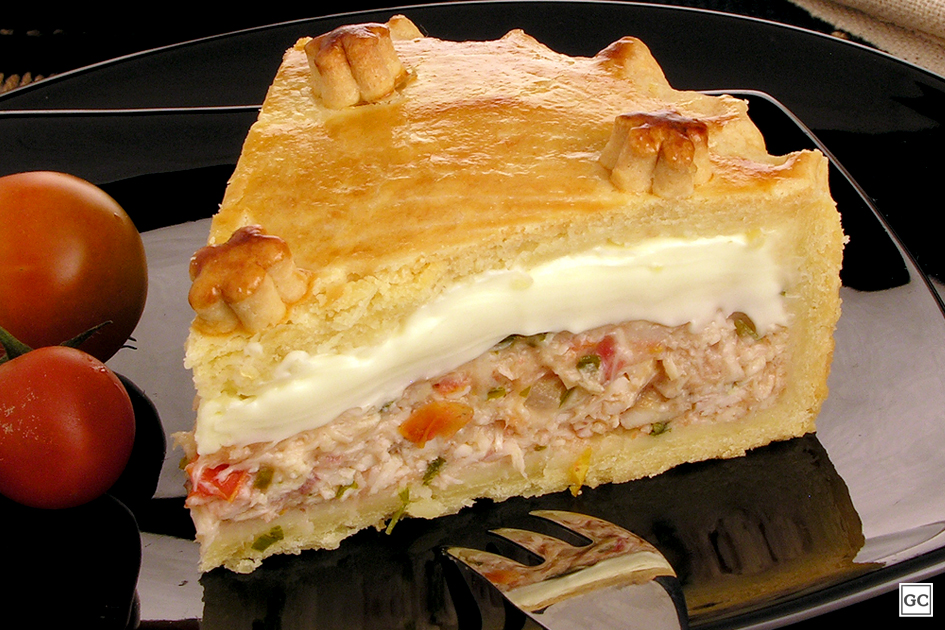

Empadão de Frango
SOBRE O PRATO
Empadão é um prato tradicional da culinária de Portugal e também popular no Brasil, é uma preparação feita no forno, em que se coloca um recheio, que pode ser de carne, frango, atum, bacalhau ou mariscos, entre camadas de puré de batata, arroz, pão, ou dentro duma massa de farinha de trigo. Desta forma, é uma variante da preparação que se chama torta no Brasil.
A versão com carne de vaca moída e puré de batata é a versão portuguesa mais tradicional, equivalente ao pastel de papa da América do Sul, do hachis parmentier de França, ou da cottage pie inglesa.
O recheio é normalmente feito refogando carne moída, ou cortada em pedaços, ou o bacalhau partido em lascas, com cebola e alho; por vezes, usa-se tomate, cogumelos, milho verde, ervilha e requeijão. Numa receita, o empadão leva apenas pão ralado e ovos e é cozido no forno como se fosse um pudim, coberto por folha de alumínio e com a forma dentro dum tabuleiro com água.
Gosto muito de empadão porque tem um gostinho de infância, de quando a família se reunía na casa dos meus avós, as crianças ficavam na rua brincando, os adultos conversando e a hora do almoço era sempre a mais esperada, quando minha avó fazia o melhor empadão de frango que já comi até hoje. Quantas boas lembranças...
INGREDIENTES
Massa
- 400g de farinha de trigo
- 200g de manteiga gelada
- 1 ovo inteiro
- 1 gema de ovo batido para a massa
- sal a gosto
- 6 colheres (sopa) de leite
- 1 gema de ovo para pincelar sobre a massa
Recheio
- 1 kg de peito de frango desossado
- 1 cebola média picadinha
- 2 dentes de alho picados e amassados
- 1 tomate picado sem pele
- 1 colher de sopa de azeite
- cheiro-verde picado
- 1 lata de milho verde
- 1 lata de molho de tomate
- 1 colher (sopa) cheia de farinha de trigo
- 3 cubos de caldo de galinha
- azeitonas picadas
MODO DE PREPARO
Recheio
- Cozinhe o peito de frango, desfie e reserve
- Em uma panela, coloque o azeite, frite a cebola e deixe dourar.
- Adicione o alho, frite por mais alguns minutos e acrescente o frango desfiado.
- Dissolva os cubinhos de caldo de galinha na água quente e junte ao refogado.
- Acrescente o trigo e mexa sem parar, vigorosamente, até obter uma consistência cremosa.
- Despeje o milho, as azeitonas, o cheiro-verde, o tomate e misture.
Massa
- Em uma tigela, misture o trigo e a manteiga até obter uma farofa.
- Acrescente os demais ingredientes e amasse bem até obter uma massa lisa.
- Embrulhe em papel filme e leve à geladeira por aproximadamente 30 minutos.
- Use metade da massa para forrar a assadeira e a outra para cobrir o recheio.
- Pincele o empadão com a gema e leve ao forno médio (180° C), preaquecido, por aproximadamente 40 minutos.
Galeria de imagens
 


